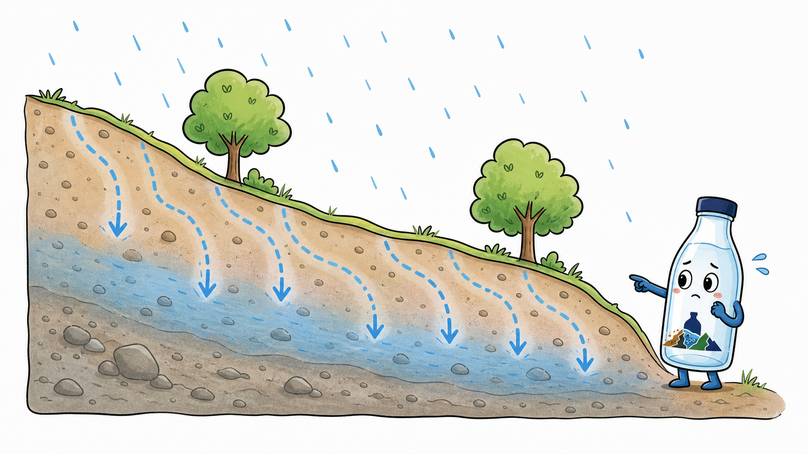
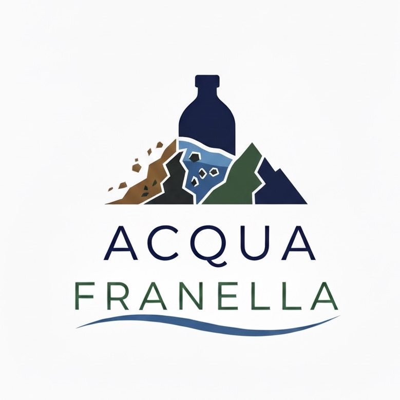
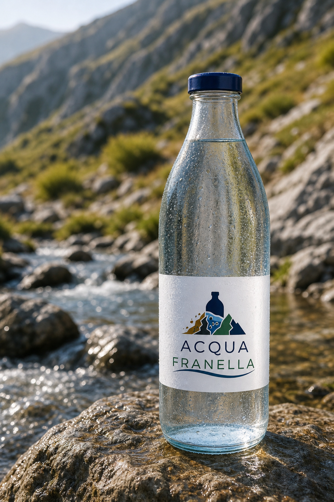
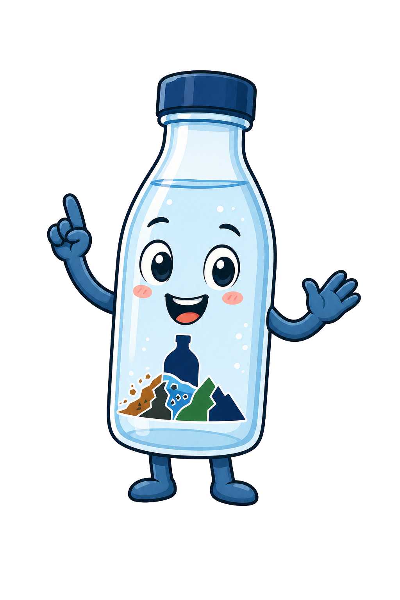
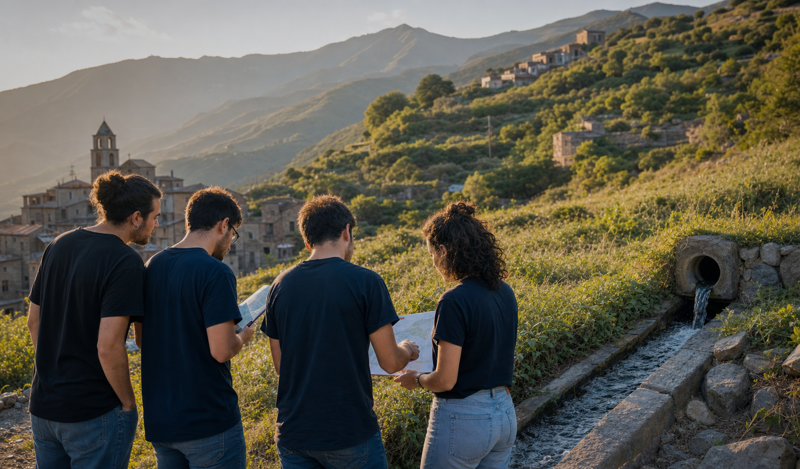
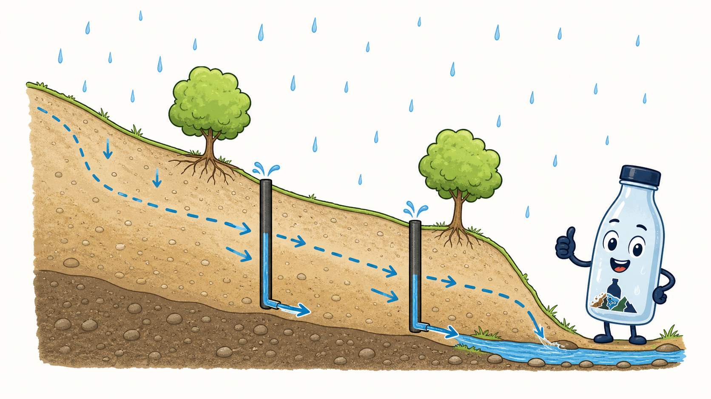
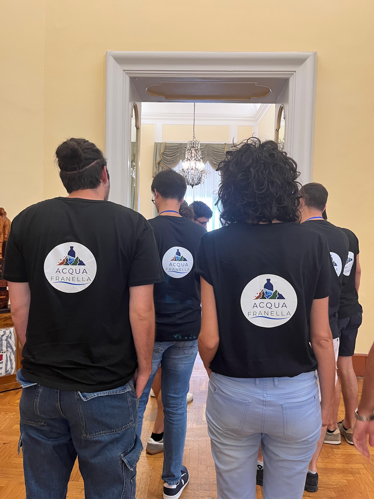

Senza pozzi drenanti
L'acqua resta dentro

La pioggia entra nel terreno e si accumula. Il pendio diventa più pesante, come uno zaino pieno d'acqua.

Acqua Franella
Acqua, memoria, prevenzione
Acqua Franella nasce da un'idea semplice e potente: l'acqua che i dreni allontanano dalle frane può diventare un simbolo vivo del territorio, una bottiglia che racconta, sensibilizza e restituisce.
Prima della bottiglia
L'Italia è fragile perché è viva: montagne giovani, colline in movimento, piogge intense, terreni che assorbono acqua fino a perdere equilibrio. Le frane non sono soltanto linee su una carta geologica. Sono strade interrotte, famiglie preoccupate, luoghi a cui qualcuno continua a voler bene.
Per questo Acqua Franella prova a cambiare il modo in cui se ne parla. Non con paura, ma con cura. Non con distanza, ma con un gesto quotidiano: prendere in mano una bottiglia e scoprire da quale ferita del territorio arriva quell'acqua.

Io ti accompagno: niente paura, parliamo di frane con parole semplici.

Una frana si stabilizza togliendo pressione. Una comunità si stabilizza aggiungendo consapevolezza.
Perché drenare
Immagina il versante come una spugna inclinata: se si riempie troppo, diventa pesante e scivolosa. I pozzi drenanti e i dreni aiutano l'acqua a uscire, così il terreno resta più asciutto e più stabile.

La pioggia entra nel terreno e si accumula. Il pendio diventa più pesante, come uno zaino pieno d'acqua.

I pozzi fanno da scorciatoia: raccolgono l'acqua nel sottosuolo e la accompagnano fuori in modo controllato.
Il terreno asciutto si tiene più forte. Il terreno troppo pieno d'acqua fatica a reggersi. Drenare vuol dire aiutarlo a svuotarsi, un po' come aprire il tappo di una vasca.
La bottiglia manifesto
Ogni bottiglia può raccontare il versante da cui proviene l'acqua, il tipo di drenaggio, le analisi effettuate, il progetto di prevenzione collegato e la quota reinvestita. È un oggetto quotidiano che costringe a una domanda gentile: cosa sto aiutando a tenere in piedi?
Dal versante alla comunità
Si parte da territori con opere di drenaggio già esistenti o da valutare con tecnici ed enti.
Analisi, autorizzazioni e controlli stabiliscono se e come l'acqua può essere valorizzata.
La bottiglia diventa una piccola lezione di geologia, prevenzione e responsabilità.
Il valore generato sostiene divulgazione, monitoraggio e nuove azioni dove possibile.
Impatto
Acqua Franella ha senso solo se resta trasparente. Il ricavo non deve sparire dentro una promessa vaga: deve essere leggibile, luogo per luogo, progetto per progetto.
Chi siamo
Possiamo parlare di frane senza aspettare l'emergenza? Possiamo trasformare un'opera tecnica in un gesto culturale? Acqua Franella nasce da qui: dal desiderio di far sentire vicino un tema che spesso appare freddo, lontano, da specialisti.
Costruiamo un luogo pilota
Partecipa
Cerchiamo comuni, università, associazioni, tecnici, sponsor e cittadini che vogliano trasformare la prevenzione in una narrazione concreta e verificabile.